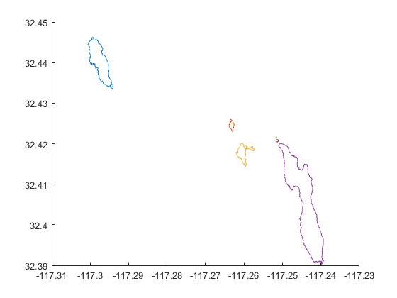
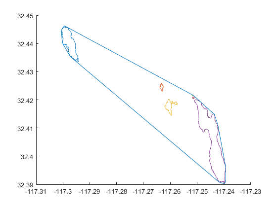
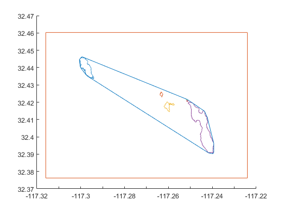
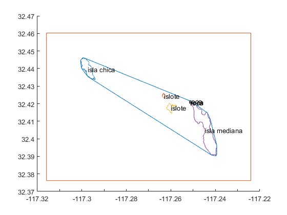
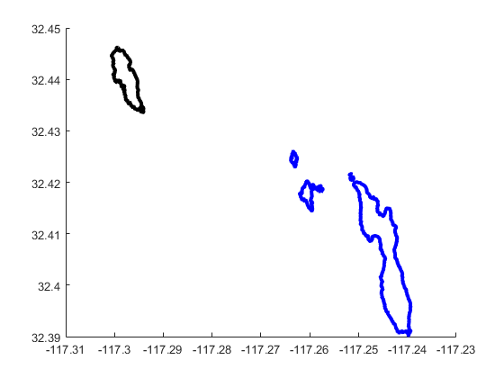
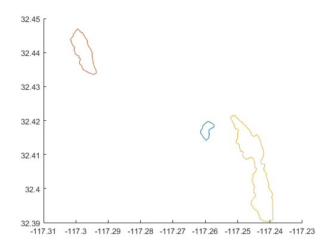

Demostración de clase Islet
Contents
Diferencia entre Islet y Geopolygon
Islet es subclase de Geopolygon. Revisaremos las propiedades y métodos en los que difieren.
Diferencia entre las propiedades de Islet y Geopolygon
propiedadesIslote = properties('Islet'); propiedadesGeopoligono = properties('Geopolygon'); disp(propiedadesIslote(~ismember(propiedadesIslote,propiedadesGeopoligono)))
'Envolvente'
'Recuadro'
'tamano'
Las propiedades Envolvente, Recuadro y tamano son las que no hereda de Geopolygon. Revisaremos cada una.
Coronado = insular(RegionID.coronado);
Islote = Coronado.Islote;
disp(['Islote es de clase: ' class(Islote)])
Coronado: \\OSTRERO\datos\coronado_LCosta.shp Islote es de clase: Islet
figure, hold on
Islote.plot();

Propiedad Envolvente
Islote.Envolvente.plot();
disp(['Envolvente es de clase: ' class(Islote.Envolvente)])
Envolvente es de clase: Geopolygon

Propiedad Recuadro
Islote.Recuadro.plot()
disp(['Recuadro es de clase: ' class(Islote.Recuadro)])
Recuadro es de clase: Geopolygon

Propiedad Tamano
Islote.text('tamano')

Diferencia entre métodos de Islet y Geopolygon
metodosIslote = methods('Islet'); metodosGeopoligono = methods('Geopolygon'); disp(metodosIslote(~ismember(metodosIslote,metodosGeopoligono)))
'Islet'
'isequal'
'ismember'
'union'
Los métodos isequal, ismember y union son los que no hereda de Geopolygon. Revisaremos cada uno.
CoronadoNorte = insular(RegionID.coronadonorte); CoronadoNorte.importCoast([toolboxes.getDataPath filesep 'coronado_LCosta.shp'], 11); IsloteNorte = CoronadoNorte.Islote; figure, hold on Islote.plot('LineWidth',3,'color','b'); IsloteNorte.plot('LineWidth',3,'color','k');
Coronado Norte: \\OSTRERO\datos\MEX_adm0.shp

Metodo ismember
disp(ismember(IsloteNorte,Islote))
1
disp(ismember(Islote,IsloteNorte))
1 0 0 0 0 0 0
Metodo union
Coronado.importCoast([toolboxes.getDataPath filesep 'MEX_adm0.shp'], 11); CoronadoNorte.importCoast([toolboxes.getDataPath filesep 'MEX_adm0.shp'], 11); CoronadoMedio = insular(RegionID.coronadomedio); CoronadoSur = insular(RegionID.coronadosur); Islote = Coronado.Islote; IsloteNorte = CoronadoNorte.Islote; IsloteMedio = CoronadoMedio.Islote; IsloteSur = CoronadoSur.Islote; norteUnionMedio = union(IsloteNorte,IsloteMedio); medioUnionSur = union(IsloteMedio,IsloteSur); unionIslotes = union(norteUnionMedio,medioUnionSur); figure, hold on unionIslotes.plot();
Coronado Medio: \\OSTRERO\datos\MEX_adm0.shp Coronado Sur: \\OSTRERO\datos\MEX_adm0.shp

Metodo isequal
disp(isequal(unionIslotes,Islote))
1